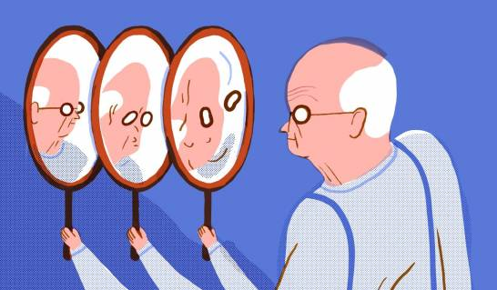

Alzhéimer
El alzhéimer es una de las condiciones de salud que más preocupan a la sociedad española (63%). La enfermedad de Alzheimer es un trastorno del cerebro que empeora con el tiempo. Se caracteriza por cambios en el cerebro que derivan en depósitos de ciertas proteínas. La enfermedad de Alzheimer hace que el cerebro se encoja y que las neuronas cerebrales, a la larga, mueran. Es la causa más común de demencia, un deterioro gradual en la memoria, el pensamiento, el comportamiento y las habilidades sociales. Estos cambios afectan la capacidad de funcionamiento de una persona.
Los signos tempranos de la enfermedad incluyen el olvido de eventos o conversaciones recientes. Con el tiempo, avanza hasta convertirse en un problema grave de la memoria y la pérdida de la capacidad para hacer las tareas cotidianas.
Los medicamentos pueden mejorar los síntomas o retardar su progresión. Los programas y servicios pueden ayudar a brindar apoyo a las personas con enfermedad de Alzheimer y a sus cuidadores. No hay ningún tratamiento que cure la enfermedad de Alzheimer. En las etapas avanzadas, la pérdida grave de la función cerebral puede provocar deshidratación, desnutrición o infección, lo que puede llevar a la muerte.
Síntomas:
- Pérdida de memoria: Dificultad para recordar información reciente.
- Desorientación: Confusión sobre el tiempo, lugar y eventos.
- Problemas de comunicación: Dificultad para encontrar las palabras correctas.
- Cambios en la personalidad: Alteraciones en el comportamiento y el estado de ánimo.
- Deshabilidades para realizar tareas: Problemas con actividades diarias, como manejar o cocinar.
Causas:
- Genéticas: Algunas variantes genéticas aumentan el riesgo.
- Ambientales: Factores como el estilo de vida y la salud cardiovascular pueden influir.
- Neurológicas: Acumulación de placas de beta-amiloide y ovillos neurofibrilares en el cerebro.
Pruebas y exámenes:
- Evaluación clínica: Historia médica y evaluación de síntomas cognitivos.
- Pruebas neuropsicológicas: Evaluaciones detalladas de la memoria, el pensamiento y el comportamiento.
- Imágenes cerebrales: Resonancia magnética (RM) o tomografía computarizada (TC) para detectar cambios estructurales en el cerebro.
- Análisis de líquido cefalorraquídeo: Para examinar biomarcadores asociados con el Alzheimer.
Tratamientos:
- Medicamentos: Fármacos como los inhibidores de la colinesterasa (donepezilo, rivastigmina) y memantina pueden ayudar a manejar los síntomas.
- Terapias cognitivas: Programas de estimulación cognitiva y terapia ocupacional para ayudar con las habilidades diarias.
- Cuidados y apoyo: Estrategias para el cuidado y apoyo emocional, tanto para los pacientes como para sus familias.